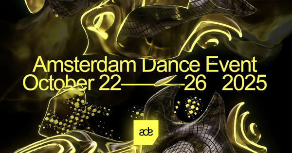
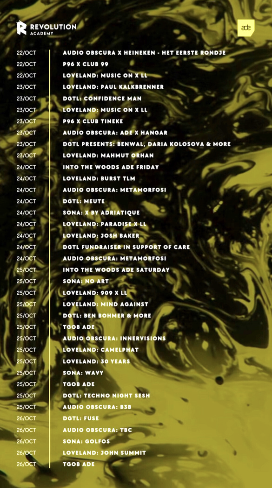

Case study / 2025
Amsterdam
Dance Event
Project overview
Coordinating volunteer operations across a multi-event programme, supporting the transition from pre-production planning to live delivery.
37
Events
350+
Volunteers
ADE
Amsterdam
My role
Coordination across a live programme.
- Project coordination
- Volunteer management
- Pre-production support
- Communication across teams
- Operational delivery
Project context
Amsterdam Dance Event is a multi-venue conference and showcase festival. The project required coordination across numerous events, teams and live operational moments.
Experience
Working across 37 events strengthened my ability to keep communication, people and operational priorities aligned at scale.
Gallery
Project material.


37 events
350+ volunteers